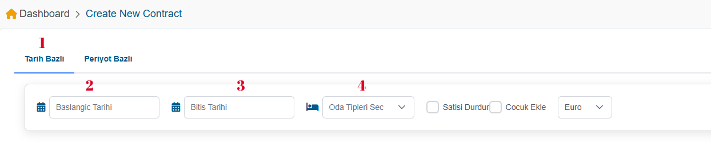

<p-toast></p-toast>


<!-- <div class="toolbar-container">
  <app-bread-crumb [items]="breadcrumbItems"></app-bread-crumb>
  <app-info-chip label="How to use this page" icon="fa fa-circle-info" dialogTitle="Sayfa Kullanim Rehberi">
    <p>Bu sayfada iki farkli contract olusturma secenegi bulunmaktadir. bunlar <span>"Tarih Bazli"</span> ve <span>"Period Bazli"</span> secenekleridir.
    </p>
    <span>1-Tarih Bazli</span>
    <p>Bu secenegi kullanarak belirli tarih araliklarinda istediginiz oda tiplerini secerek fiyat tanimlamalari yapabilirsin.Gerekli filtreler ust tarafta bulunmaktadir. Ornegin <span>"Cocuk Ekle"</span> secenegine tiklarsaniz sectiginiz tarih araliklarinda ve oda tiplerinde cocuk yas araliklari da cikacaktir. Ornek olarak resimli anlatim icin okumaya devam ediniz.</p>

    
  </app-info-chip>
</div> -->

<div class="card">
  
  <p-tabView>
    
    <p-tabPanel header="Tarih Bazli" >
      
      <ng-template pTemplate="content">
        
       <app-date-based-contract></app-date-based-contract>
      </ng-template>
    </p-tabPanel>

    <p-tabPanel header="Periyot Bazli" >
      <ng-template pTemplate="content">
        <app-period-based-contract></app-period-based-contract>
      </ng-template>
    </p-tabPanel>
  </p-tabView>
</div>


